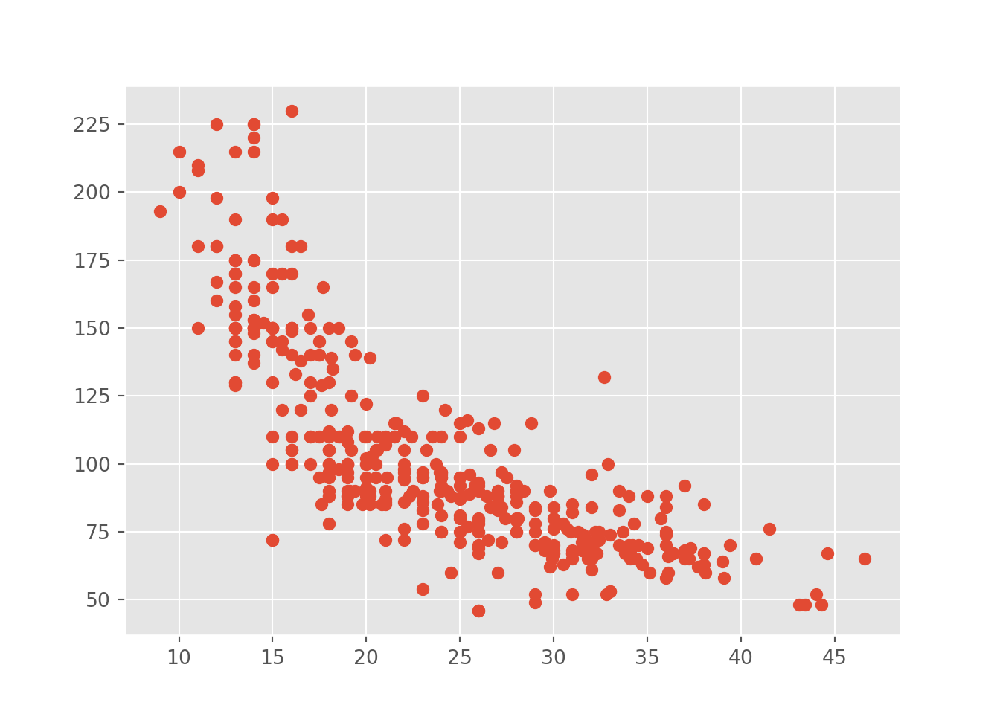

#Print with Python
print("👋 World")#> 👋 WorldEdgar Treischl
June 2, 2024
The Pythoneer book is work in progress and at a very early stage. The goal is to provide a guide for R users to transition into Python. The project is open-source and contributions are welcome. There are several reasons why it can be beneficial for R users to learn Python:
Versatility: While R is a great language for statistical analysis and data visualization, Python is a general-purpose language that can be used for a wider variety of tasks, such as web development, machine learning, and scientific computing.
Large and active community: Python has a larger and active community, which means that there are a lot of resources and support available if you run into problems or want to learn new things.
Popularity in industry: Python is widely used in industry, particularly in areas such as data science and machine learning, so learning Python can make you more competitive in the job market.
Integration with other tools: Python has many libraries and packages that allow it to integrate with other tools, such as databases, big data frameworks, and cloud computing platforms, making it a flexible and powerful tool for data analysis and computation.
Different approaches to problem-solving: R and Python have different approaches to problem-solving and data analysis, so learning both can expand your skill set and enable you to tackle a wider range of problems.
This chapter aims to provide you with a brief overview of the book. We will discuss the motivation behind this book, the target audience, and the structure of the book. Formost, I try to outline how you can transfer your R knowledge to Python.
What is my motivation to write this book? I tried to learn Python with the help of several books and classes. Coding and programming languages were not new for me, but still I failed to learn Python. I consider myself a tech-savvy without having a heavy programming background, but a lot of fun learning new things and enjoy coding. For this reason I started this book. If you want to learn Python to automate processes, apply statistical procedures from the scratch, or use Python to program games, this book will not help you in any way. However, you do wanna transfer your R knowledge, this book might be right choice. Thus I assume you have some basic knowledge of R and programming skills and there is no need to explain basic concepts such as loops, functions, or data types.
Let be give you an example why I started this book
Before we can do anything, we have to install Python, learn how to manage virtual environments, and we how we can install packages. As with R, you have to install and import libraries for most tasks. We will cover these steps in the next chapter. For now, we will focus on some code snippets only. Say we use the seaborn package because it provides us with some data. We can use the mpg data set as cars and fool around with it. Only if you have never seen the mpg data set, you can use the following code snippet to get an overview of the data set.
#import seaborn to get some data
import seaborn as sns
#load the mpg data set as cars
cars = sns.load_dataset("mpg")
print(cars)#> mpg cylinders ... origin name
#> 0 18.0 8 ... usa chevrolet chevelle malibu
#> 1 15.0 8 ... usa buick skylark 320
#> 2 18.0 8 ... usa plymouth satellite
#> 3 16.0 8 ... usa amc rebel sst
#> 4 17.0 8 ... usa ford torino
#> .. ... ... ... ... ...
#> 393 27.0 4 ... usa ford mustang gl
#> 394 44.0 4 ... europe vw pickup
#> 395 32.0 4 ... usa dodge rampage
#> 396 28.0 4 ... usa ford ranger
#> 397 31.0 4 ... usa chevy s-10
#>
#> [398 rows x 9 columns]Suppose a mean function is not implemented in Python. We can create our own function to calculate the mean. We need to define a function that calculates the mean of an array. First, we have to define the function with the def keyword, followed by the name of the function and the input value. The function should return the sum of the array divided by the length of the array.
# Define a function that calculates the mean of an array
def mean (array):
n = len(array)
return sum(array) / n
#Apply the function to the mpg column of the cars data set
mean(cars.mpg)#> 23.514572864321615That’s a cool way to show us how a function works. We have to provide a name of a function and tell Python what the function does. I always learned how functions and other concepts work in much more artificial way, especially in classes courses about Python. Look how I learned how a function works in Python:
#Create a funny function
def hello(name):
return (f"Hallo, {name}! How are you?")
# Apply the funny function
hello("Edgar")#> 'Hallo, Edgar! How are you?'Thus, we create the hello function that returns a sentence and inserts the name of the input value. Nothing wrong about that, even calculating a mean seems a little bit more realistic to illustrate why we need such a function. Anyway, in some classes I learned how to calculate the mean, the median, and the modus. Maybe a function to calculate the variance or others measure of central tendency. You know what Pearson R is? Guess what the next code does? And I guess you will skip the code after line 2, well that’s what recommend since the code only illustrates my point. The next console shows how to calculate the correlation coefficient between two arrays and I actually copied to code from a book.
# Define a function that calculates the correlation coefficient
import math
def correlation(x, y):
n = len(x)
# Means
x_mn = sum(x) / n
y_mn = sum(y) / n
# Variance
var_x = (1 / (n-1)) * sum(map(lambda xi: (xi - x_mn) ** 2 , x))
var_y = (1 / (n-1)) * sum(map(lambda yi: (yi - y_mn) ** 2 , y))
# Std
std_x, std_y = math.sqrt(var_x), math.sqrt(var_y)
# Covariance
xy_var = map(lambda xi, yi: (xi - x_mn) * (yi - y_mn), x, y)
cov = (1 / (n-1)) * sum(xy_var)
# Pearson's R
r = cov / (std_x * std_y)
return float(f"{r:.3f}")
# Some data
size = [20, 15, 40, 25, 35]
cost = [300, 400, 600, 700, 666]
print(correlation(size, cost))#> 0.666Please, use numpy to get the scientific toolkit and pandas for tabular processing and the presentation of data. The word numpy stands for numerical Python and is a package that provides us with a lot of functions to work with arrays. The pandas package is a data manipulation and analysis library that provides us with data structures and functions to manipulate data. We can use the numpy package to calculate the correlation coefficient between two arrays. The numpy package provides us with the corrcoef function that takes two arrays as input and returns the correlation coefficient.
#> array([[1. , 0.66645893],
#> [0.66645893, 1. ]])The pandas package provides us with the describe function that returns an overview of the data. We can use the mean and std functions to calculate the mean and standard deviation of the data.
#> mpg cylinders ... acceleration model_year
#> count 398.000000 398.000000 ... 398.000000 398.000000
#> mean 23.514573 5.454774 ... 15.568090 76.010050
#> std 7.815984 1.701004 ... 2.757689 3.697627
#> min 9.000000 3.000000 ... 8.000000 70.000000
#> 25% 17.500000 4.000000 ... 13.825000 73.000000
#> 50% 23.000000 4.000000 ... 15.500000 76.000000
#> 75% 29.000000 8.000000 ... 17.175000 79.000000
#> max 46.600000 8.000000 ... 24.800000 82.000000
#>
#> [8 rows x 7 columns]We have to append the describe() function to the saved cars data in order to get an overview of the central tendency measures. You can do the same with all other functions that calculate other measures, such as the mean or standard deviance:
#> mpg 23.514573
#> cylinders 5.454774
#> displacement 193.425879
#> horsepower 104.469388
#> weight 2970.424623
#> acceleration 15.568090
#> model_year 76.010050
#> dtype: float64#> mpg 7.815984
#> cylinders 1.701004
#> displacement 104.269838
#> horsepower 38.491160
#> weight 846.841774
#> acceleration 2.757689
#> model_year 3.697627
#> dtype: float64And we should at least look at the scatter plot since we talk about correlations. The matplotlib provides a lot of different graphs for us. And in case you are an R user, you can even use the ggplot2 style, just to let you show some possibilities. But of course, we have to think more systematically how we can reach our goal in the next chapter.
#scatter plot example
import matplotlib
import matplotlib.pyplot as plt
matplotlib.style.use('ggplot')
plt.scatter(cars.mpg, cars.horsepower)
This chapter provided you with a brief overview of the book. We discussed the motivation behind this book, the target audience, and the structure of the book. We also outlined how you can transfer your R knowledge to Python. In the next chapter, we will discuss how to install Python, manage virtual environments, and install packages.